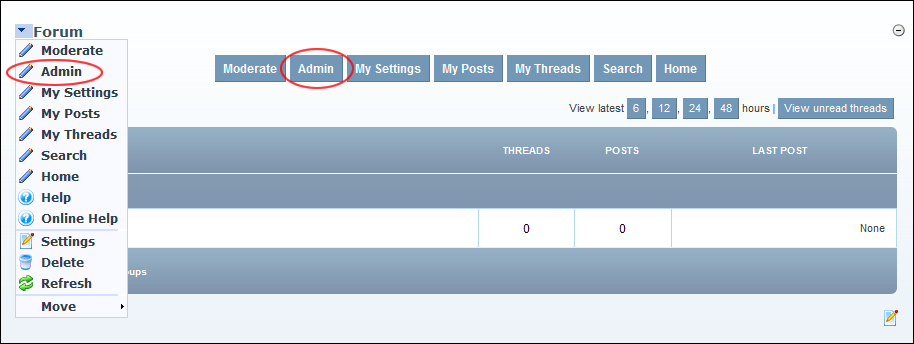

How to navigate to the Forum Administration page, also called the Forum Admin Control Panel, of the Forum module. Access to this page is restricted to Forum Administrators.
 Navigating to the Forum Administration Page